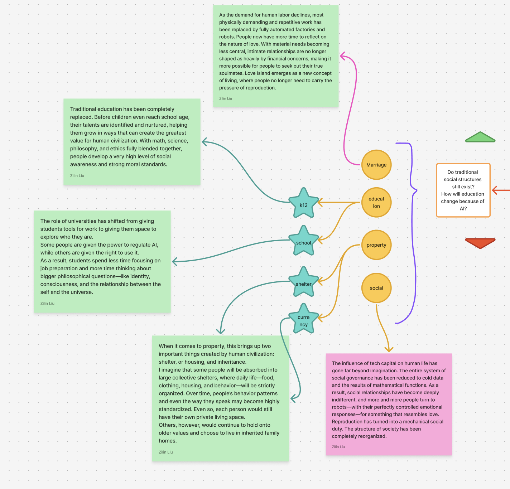
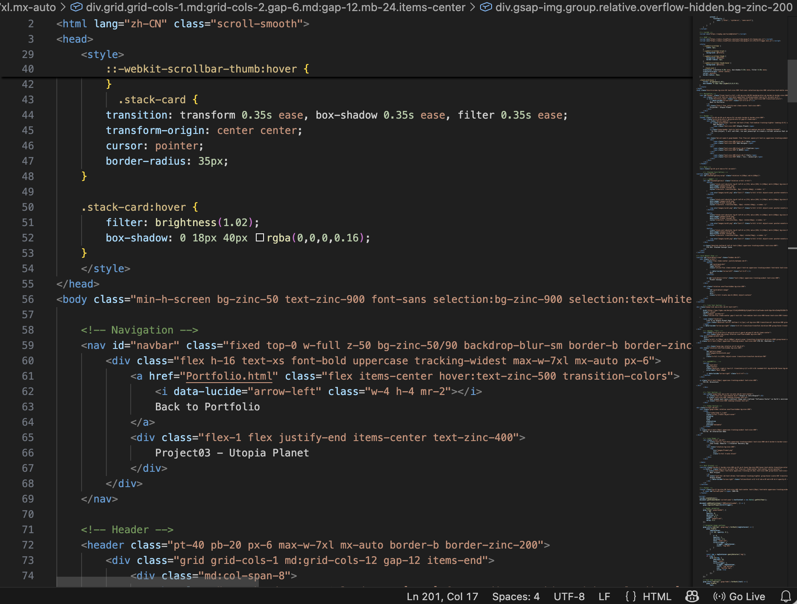
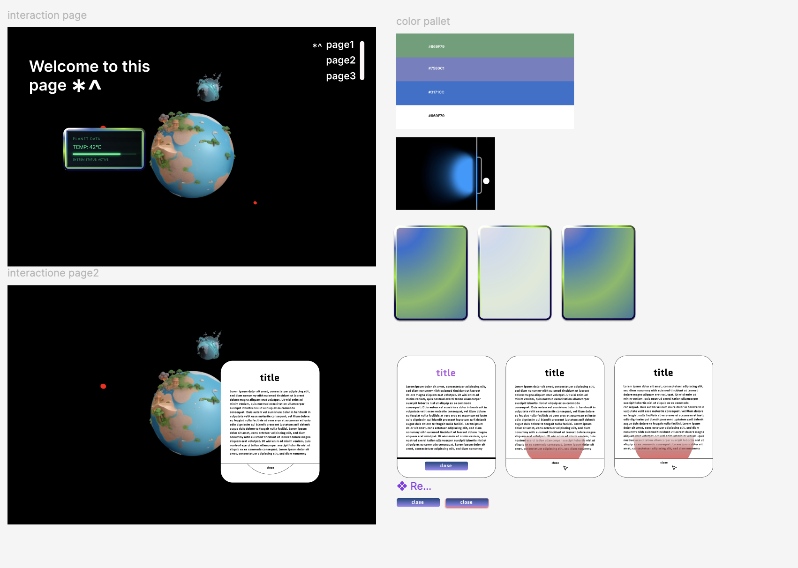

FIG 01A. Stacked Concept Cards
"Utopia or Anti-Utopia?"
Each planet is imagined as a speculative world shaped by a single core idea. Their differences are not only visual, but also environmental and social. By exploring them one by one, viewers can reflect on how technology, emotion, and systems of control might reshape Earth in the future.
Planet Concept

FIG 02. Sketches

FIG 03. Brainstorm
"About AI Usage In This Project"
n this project, AI was used as a supporting tool in both coding and 3D modeling. Drawing from my previous future-oriented project explorations, I worked with AI to organize and refine the code, resolve bugs, and expand the interaction design with more complex effects. The main models I used were Gemini 3 and Hunyuan
FIG 02. AE Interaction Demo
UI Design

Coding Process & UI Design
